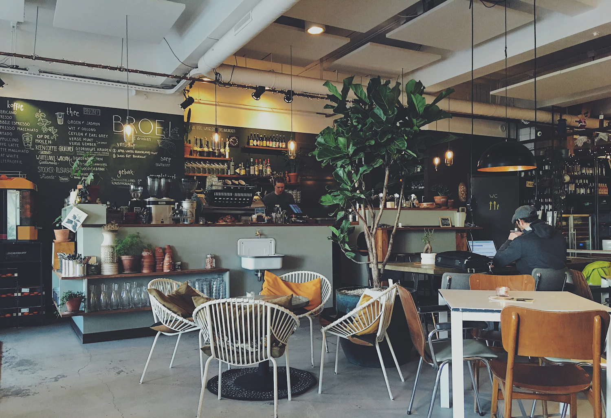
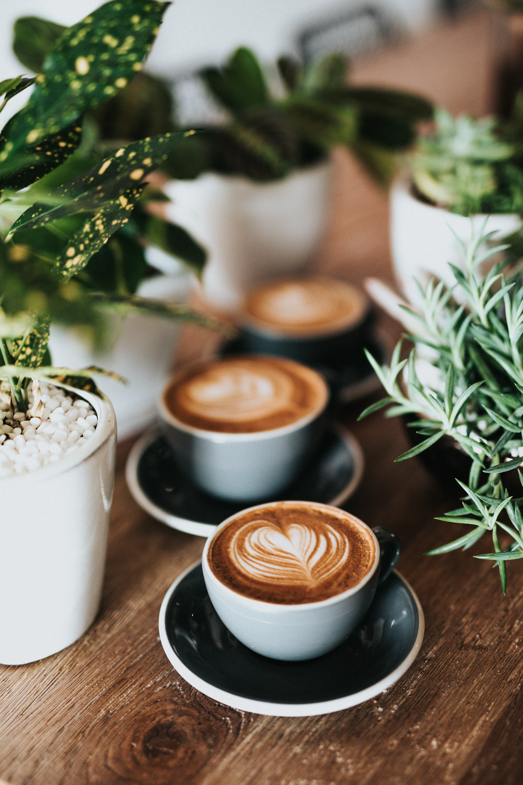
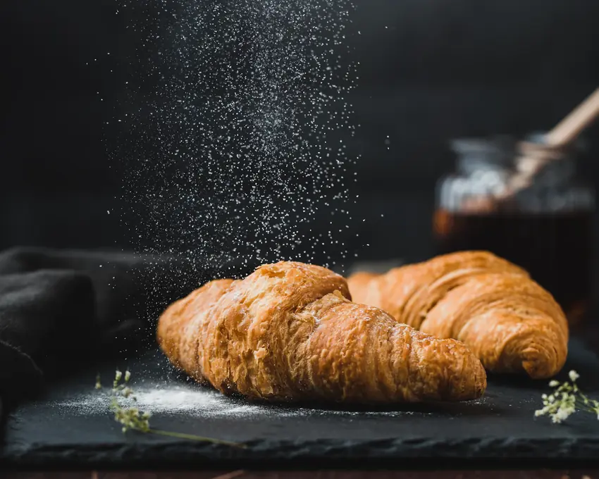

GOODCOFFEE.NO RUSH.
A proper cup, something good to eat, and a little more room to stay. Find your spot on Lever Street.

Somewhere to stay a while.
Between the morning rush and the afternoon catch-up, there’s Nomad. Drop by for a coffee, settle in with a sandwich, or take a little pause from the city outside.
Find your kind of spaceYOUR USUAL,
AND THEN SOME.
Come for the coffee. Stay for the good company and a bite to go with it.

MADE FOR A MOMENTYOUR DAILY RITUAL
Coffee
& more.
From the first espresso to an afternoon latte, take your coffee at your own pace. Matcha and chai are on the menu, too.
OUTSIDE: CITY LIFE / INSIDE: YOUR OWN PACE
GOOD THINGS
TAKE TIME.
A LITTLE
ROOM TO
ROAM.
Big windows, exposed brick, and space to make yourself comfortable. Whether you’re passing through the Northern Quarter or catching up over a cup, there’s room to stay a while.
Bring a friend. Bring a book. Or just bring yourself.
Find us on Lever StreetMeet you
on Lever St.
HERE’S
YOUR SPOT.
Right in the heart of the Northern Quarter. Come in for a coffee, grab a bite, and make yourself at home.
24 Lever Street
Manchester M1 1DW
Check the latest opening times with the café before your visit.

SOON.24 / LEVER STREET